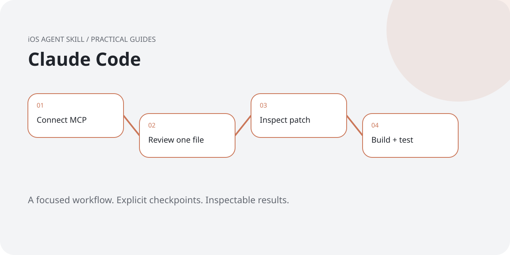
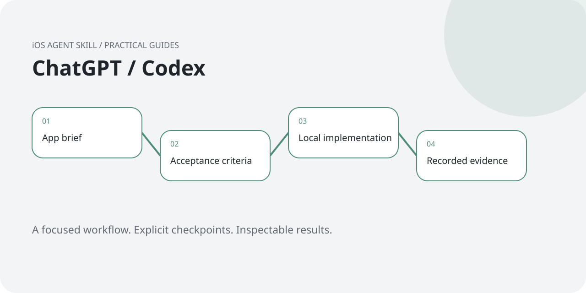
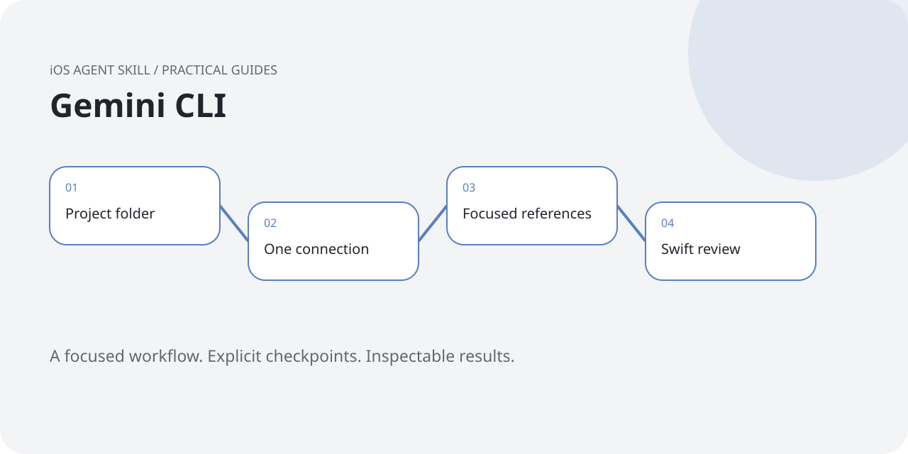
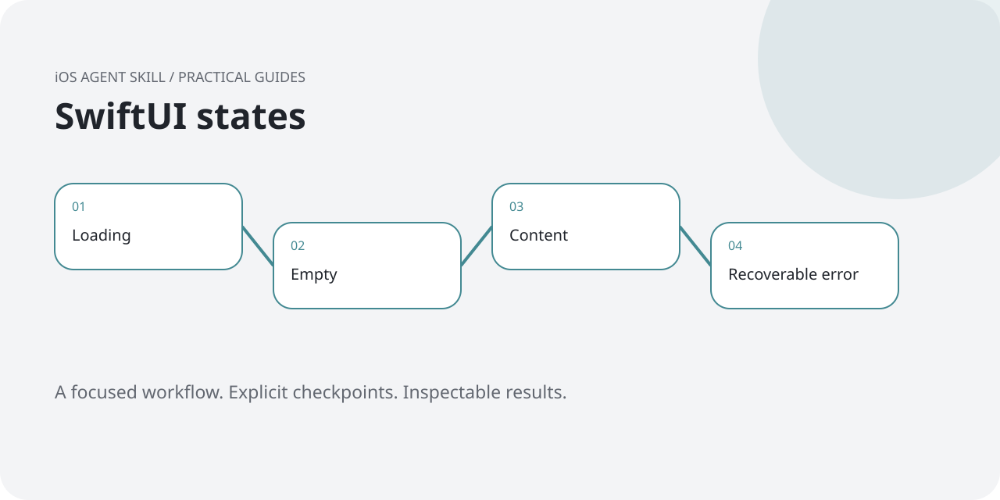

Review AI-generated Swift before you trust it
A focused review, a small patch and a real test beat a confident completion message.
Read the guide →The project notebook
Practical Swift and iOS workflows: focused reviews, simulator checks and honest setup advice.
A focused review, a small patch and a real test beat a confident completion message.
Read the guide →
Use persistence, search and accessible states to make “it works” a testable claim.
Read the guide →
Understand the difference between a skill, a local MCP connection and ChatGPT web setup.
Read the guide →
A small review-to-test loop for an existing iOS project.
Read the guide →
Separate a browser planning session from a connected development environment.
Read the guide →
Avoid duplicate connections and keep setup evidence separate from app evidence.
Read the guide →
Discovery and hooks are useful milestones, but they are not a finished app.
Read the guide →
Make loading, empty, success and error states part of the implementation brief.
Read the guide →
Turn explicit color tokens into Assets.xcassets, then inspect the result in your app.
Read the guide →